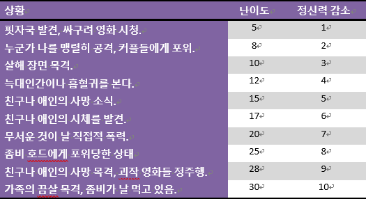
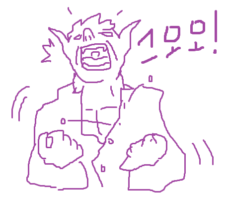
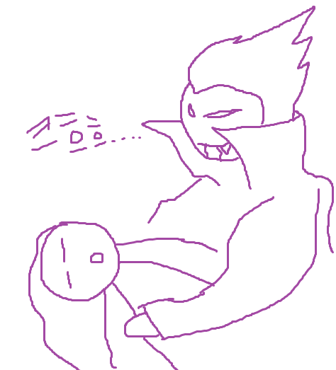

특수규칙
아이디어 제공: Risusverse이 페이지는 시나리오의 장르와 필요에 따라서 기본규칙에 추가해서 사용가능한 선택적인 규칙들을 다루고 있습니다.
특전/Perk
아이디어 참조: Dan Suptic의 Perk특전은 클리셰나 속성처럼 판정에 직접적인 수치로 잘 하는 것을 나타내는 것과는 약간 틀린 개념을 가지고 있지만 캐릭터에게 좋은 장점을 부여해주는 장치입니다. 마치 옵션룰이나 하우스룰처럼 원래는 없던 규칙을 캐릭터만을 위해 만들어줍니다. 이는 밸런스를 위해 GM과 잘 상의해서 만들어야 할것이며 강력함에 따라서 CD 1~2점을 투자해 얻을 수 있습니다. 아래 기존 특전 리스트가 있으니 그대로 사용해도 좋고 새로운 특전을 만들기 위해 참조해도 좋습니다. 원래 규칙이나 아래 예시로 불가능한 일을 내 캐릭터가 하고 싶으면 좋겠다라고 생각할 경우 GM과 함께 잘 만들어 보세요.
GM과 PL은 캐릭터의 특전을 만들 때 아래와 같은 질문을 가져봅시다.
- 어떤 것이 가능해졌으면 좋겠는가?
- 언제 어떻게 발동이 가능한가?
- 사용하기 위해 무언가를 소모해야하는가?
- 사용 횟수 등 제한 사항은 있는가?
- CD는 몇 점 투자해야하는가? 1점짜리 특전이면 2점짜리 특전으로 업그레이드가 가능한가?
특전 목록
- 럭키맨: CD 1 투자당 DP를 매 세션마다 추가로 1점씩 더 얻는다.
- 오버드라이브: DP를 사용해 '더블펌프'를 마음대로 발동 가능.
- 도구는 나의 몸: 클리셰를 하나 정해서 해당 클리셰의 대표장비가 없어도 패널티를 받지 않는다.
- 즉석 회복: GM의 눈치를 보지 않고 대결이 끝나면 자동으로 소모된 클리셰 1점을 회복한다.
- 눈에는 눈: 대결/전투중 딱 한 번 내가 피해를 받을 때 상대도 똑같은 피해를 입힌다.
- 완벽한 순간: 세션에 한 번 판 정 하나를 자동 성공.
- 구두쇠: 한 세션에 한 번 없어진 대표장비 하나를 어떻게 해서든 되돌린다.
- 강력한 한방: 대결/전투 중 한 번 피해를 2배로 준다.
- 사이드킥: 동료/친구/부하 등 PC를 돕는 PL이 조종하는 조연 캐릭터를 만든다. 사이드킥은 CD 1개 투자당 클리셰 3점을 보유한다. 사이드킥은 PC의 최고 높은 클리셰 점수보다 높을 수가 없다.
- 불굴의 근성: 대결/전투 중 아웃되었을 때 딱 한 번 주사위를 굴려 순수 6이 뜨면 클리셰나 HP가 1점 상태로 버틴다.
- 맹공격: 대결에서 비겼을 경우 자신이 이긴 것으로 친다.
- 인수인계: 이 특전을 가진 캐릭터가 리더로 있는 팀이 해체되었을 시 팀은 다른 캐릭터를 리더로 바꾸며 바로 새 팀을 만든다. 해체의 패널티 피해는 무시한다.
- 다재다능: 미흡한 클리셰 사용으로 받는 난이도 상승을 4의 배수로 줄여준다. CD 2점 투자시 3의 배수까지 줄여줌.
- 양민학살: 클리셰 최대치가 1점인 상대와 대결시 무조건 승리.
특기
특기는 각 클리셰에 속해있는 요소로 클리셰 안에서도 더 잘하는 무언가를 뜻합니다. 특기는 클리셰마다 해당 클리셰의 점수만큼 가지며 원래 클리셰 점수에 더불어 +2를 판정에 더 더합니다. 아서왕의 경우 '켈트족의 영웅(3)'이 3점이니 그 안에서 속성 3개를 정할 수 있습니다. 만약 켈트족 전통곡, 숲의 지식, 들짐승 사냥 이렇게 3개로 정하면 대개 켈트족의 영웅 클리셰를 사용할 때는 +3이지만 위 3개의 속성과 연관된 일을 할 때면 +2를 추가해서 +5로 판정하는 것입니다. 완급조절이나 캐릭터의 중요도에 따라 특기가 주는 보너스는 +1이나 +3 등으로 변경이 가능합니다.
공포와 정신력(MP)
정신력은 공포물처럼 캐릭터의 정신상태가 중요할 경우 사용되는 시스템입니다. 이 규칙을 사용할 경우 캐릭터 제작 때 각 캐릭터는 기본적으로 MP10를 가지고 시작하며 이는 캐릭터의 정신적 상태의 수치를 뜻합니다. 여기서 캐릭터들은 자신이 보유한 클리셰 중에서 정신적 강인함과 관련된 클리셰의 1점당 정신력을 추가 1씩 받습니다. 반대로 정신적인 면을 하락시키는 느낌의 나쁜 클리셰 1점당 MP를 1씩 깎습니다.
예시) 역전의 용사(5) 캐릭터는 정신력이 부각되는 ‘역전의 용사’이라는 클리셰가 5점이니 이를 기본 정신력에 추가 시켜서 최대 치가 15가 된다. 죄 많은 낙오자(3) 캐릭터의 이 클리셰는 정신적으로 악하고 나약해 보이니 점수를 오히려 빼서 HP가 7이 된다.참고로 이 정신력이라는 것은 단지 무언가를 끈기 있게 해내는 의지력뿐 아니라 도덕성이나 인간미, 혹은 공포를 극복하는 용기 등 그 형태의 폭이 넓습니다. 정신력은 캐릭터가 자신의 정신에 부정적인 영향을 주는 요소와 얽혔을 경우 감소하게 되는데 그 수치는 상황에 따라 다릅니다. 물론 그냥 바로 감소되는 것은 아니고 정해진 난이도에 메인 클리셰(혹은 GM이 지정한)로 판정을 해서 성공하면 아무 일도 벌어지지 않고 실패하면 감소됩니다. 정신력 피해의 척도는 아래 표에 나와있다. 정신력 판정에서 질 경우 대결에서처럼 상황에 따라서는 클리셰 점수가 1점 감소 됩니다. 이에 대한 회복의 때는 GM이 정합니다.
정신적인 피해를 입을 시 이것이 끝이 아니라 추가적으로 정신질환을 얻게 됩니다. (게임의 스타일에 따라서 MP만 넣고 광기에 대한 부분은 사용하지 않아도 된다) 일단 정신력 판정에서 실패 시 정신력 감소와 함께 단기 정신질환(1D6시간)을 얻게 됩니다. 헌데 정신력이 단번에 절반 이상 감소할 시엔 단기간 대신에 장기 정신질환(1D6주/개월/년)을 얻게 됩니다. 장기 정신질환의 기간은 GM이 정하겠지만 이를 쉽게 다루는 방법은 난이도에 따라 나누는 것. 1~10은 1d6주, 11~20은 1d6개월, 21~30은 1d6년.
이렇게 감소된 정신력에 대한 회복은 GM이 정해줍니다. 마지막으로 정신력이 0까지 떨어질 경우 죽거나 평생 광인이 될 수도 있습니다. 즉 패널티로 심장마비 혹은 영구 정신질환에 걸리는 것입니다. 광인이 된 캐릭터는 NPC로 변해서 플레이가 불가능해지며 죽는 경우도 심장마비나 자살 같은 비참한 최후가 됩니다.
괴물화
늑대인간, 헐크, 반요 등등의 가상 생명체들은 괴물도 인간도 아닌 어정쩡한 중간 사이에 있습니다. 대개 가상 매체에서 이들은 평소엔 평범한 인간이었다가 무슨 일이 터지면 내면의 괴물을 일깨워 버리죠. 이 규칙을 사용하는 캐릭터는 ‘늑대인간’ 같은 괴물 클리셰를 가지고 있어야 합니다.
- 폭주로 변신하려는 것을 제어할 때 판정 필요.
- 자의로 변신하고 싶을 때 판정 필요.
- 변신 상태에서 자신의 이성을 유지하고 싶을 때 판정 필요.
늑대인간으로 변신한(괴물화된) 캐릭터는 당연 인간일 때의 모습보다 강해지고, 이를 다루는 시스템 또한 있습니다. 캐릭터는 힘 쓰는 것과 육체적 전투에 관련된 일을 할 때 전투 클리셰(X)+늑대인간(x) 만큼의 수치로 판정을 합니다.
예시) 딕키는 고대 뱀파이어 빅토리아와 맞서기 위해 ‘혼종 괴물(3)’을 사용해 괴물화를 시도한다. GM은 딕키의 Pl에게 TN15에변신 판정을 시키고 결과가 16이 나와 딕키은 변신에 성공한다. 그 후 딕키는 ‘어설픈 주먹질(1)’로 빅토리아에게 주먹을 날리는데, 이 때 괴물의 힘이 적용되어 ‘어설픈 주먹질(1)+혼혈괴물(3)’, 합쳐서 주사위 4개로 판정을 한다.
괴물화되면 지성이 떨어지는 점이 생기는데, 이 또한 시스템적으로 적용이 가능합니다. 괴물화된 캐릭터는 지성 관련 클리셰로 판정을 하고 성공할 시 원하는 행동에 대한 판정을 이어서 합니다. 실패하면 잠시동안 PC의 소유권이 GM에게 넘어갑니다. 폭주 변신과 이성 유지는 반응으로 치나 자의 변신은 행동으로 칩니다.
흡혈귀
판타지와 호러의 단골인 흡혈귀(혹 유사한 것)에 대한 규칙. 먼저 흡혈귀 캐릭터는 ‘흡혈귀’라는 단어가 들어가는 클리셰를 가지고 있습니다. 그럴 경우 시작 점수 투자와는 무관하게 따로 ‘혈액’ 클리셰를 만들어야 하는데, 이 때 혈액 클리셰의 점수는 흡혈귀 클리셰 점수와 같습니다. 흡혈귀 캐릭터는 이 혈액 클리셰로 특별한 것들을 할 수 있게 됩니다. 대신 주의할 점은 혈액은 흡혈귀에게도 매우 중요한 것으로 혈액이 0이 될 시 잠들어버립니다.
- 능력강화: 판정을 할 때 혈액 클리셰에서 점수를 뽑아서 일시적으로 클리셰 점수를 추가시킬 수가 있습니다. 흡혈귀(6)인 캐릭터는 아파트 옥상에서 뛰어 내리며 파쿠르(2)로 판정을 합니다. 이 때 혈액(6)에서 2점을 뽑아 판정에 주사위 2개 추가, 즉 4d6로 판정을 하게 됩니다. 물론 혈액의 점수는 4로 떨어집니다.
- 사냥: 흡혈귀는 피를 마시기 위한 사냥감(일반인 기준)을 발견한 후 결투를 해서 이겨야만 한다. 먹이감을 발견하는 난이도는 상황과 장소를 고려해서 정합니다.
- 회복: 혈액 1점당 클리셰 1점 회복 가능. HP는 혈액 1점당 1d6 회복.
이렇게 흡혈귀 캐릭터는 피를 이용해서 일반 캐릭터들보다 대단히 강해 보이지만 흡혈귀들에게도 약점은 있으니, 그것은 바로 태양! 태양빛에 노출된 흡혈귀는 먼저 1기간당(대결의 라운드나 초, 분 등등) 혈액이 1점씩 감소되고, 그 후에는 1시간당 흡혈귀 클리셰가 전부 1점씩 감소됩니다. 그렇게 흡혈귀 클리셰가 0이되면 결과는 GM이 서술합니다. 덧붙여서 태양 때문에 감소된 클리셰들은 혈액으로 밖에 회복하지 못합니다.
흡혈귀 규칙에서 크리처를 흡혈귀를 국한시키지 않고 흡혈귀를 식인 괴물, 혈액을 인육 등으로 명칭을 바꿀수가 있습니다. 또한 흡혈귀의 단점인 태양 노출도 은이나 물 등 다른 것에 노출하면 작용되는 식으로도 변경 가능.
수사물 규칙
PC들은 모두 유능한 조사원으로서 무언가 탐색하고 조사하는 데 도가 텄기에 그들은 무언가에 대한 단서를 절대로 놓치지 않습니다. 기본적으로 모든 PC는 조사 활동을 할 시 이에 필요한 판정에 실패를 해도 단서를 얻을 수가 있습니다. 그리고 성공 시 원래 단서 보다 더 세밀한 정보가 담긴 단서를 얻을 수가 있습니다.
샘은 오크를 협박해서 보물의 위치를 알아내려고 한다. GM은 판정을 요구하고 샘은 '깡패 사제(3)'로 TN 15에 판정해 실패한다. 오크는 “보물은 어둠의 사막 북쪽에 있는 오크 마을 근방에 있다.”라고 말한다. 만약 성공했다면 오크는 “보물은 어둠의 사막 북쪽의 오크 마을 근방에 사는 딕키라는 남자가 아마 그 근방에 숨겨 뒀을 것이다.”라고 더 세밀한 정보를 줬을 것이다. 크리티컬이 뜨면 물론 그보다 더 좋은 정보를! 허나 오크가 만약 최소한의 정보만 알고 있는 말단이라고 치면 성공과 실패 여부를 떠나 최소한의 정보 외에는 더이상 아는 게 없을 수도 있다.